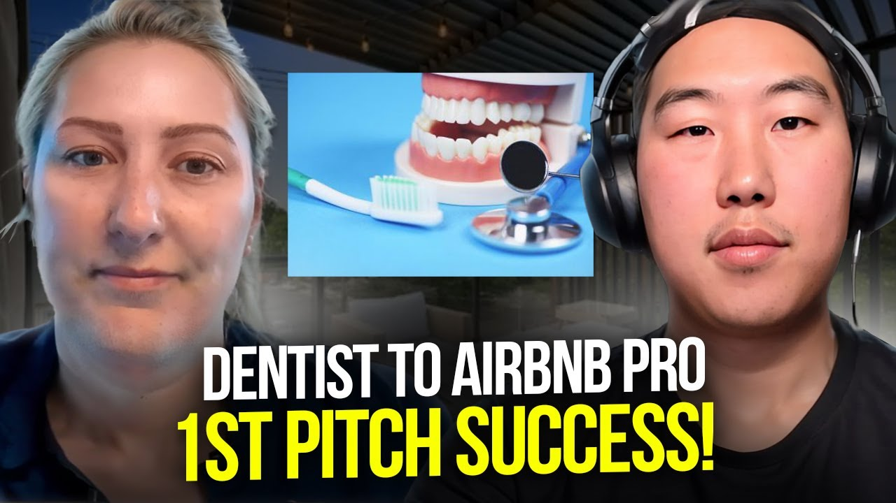

How Kayla Landed Her First Airbnb in 7 Days with Her First-Ever Pitch (Dentist Case Study)
Kayla Schwarz, a full-time dentist from Cleveland, landed her first Airbnb arbitrage property in just 7 days with her very first pitch. Learn how she generated $82,000 in her first 12 months while managing her dental practice.


Use This Like a Tool
The point of this page is not more information. The point is better judgment before you act.
- Pull the real numbers first.
- Run a base case and a stress case.
- Use the result to make a cleaner decision, not a faster emotional one.
Kayla Schwarz generated $82,000 in her first 12 months from one Airbnb arbitrage property in Cleveland, Ohio. A full-time dentist who owns her own practice, Kayla discovered Airbnb arbitrage on TikTok, took Preston's intro course the same weekend, and secured her first property within 7 days of her first landlord pitch. Today, she manages her 2,200 square foot trendy townhome in just 2-4 hours per week while running her dental practice full-time.
This case study breaks down exactly how Kayla built this Airbnb arbitrage business, including her specific approach to landlord negotiations, market selection in an often-overlooked city, and the systems that allow her to manage everything with minimal time investment.
In this article:
Quick Results: Kayla's Airbnb Arbitrage Numbers
| Metric | Value | Context |
|---|---|---|
| First Year Revenue | $82,000 | July 2023 - July 2024 |
| Properties | 1 | Cleveland, Ohio (Tremont) |
| Property Size | 2,200 sq ft | Multiple bedrooms, trendy townhome |
| Monthly Rent | $4,000 | High-end property investment |
| Estimated Monthly Expenses | $5,250+ | Rent, utilities, cleaners, VA, maintenance |
| Time to First Property | 7 days | From first pitch to signed lease |
| Initial Investment | $35,000-$40,000 | Furniture, setup, professional photography |
| Weekly Time Commitment | 2-4 hours | After systems and VA in place |
| Future Bookings | $40,000+ | April-July already booked (as of interview) |
Kayla's Background: From Dentist to Airbnb Entrepreneur
You don't need real estate experience to start Airbnb arbitrage. Kayla Schwarz is proof: she came from dentistry with zero rental property experience and built an $82,000/year revenue stream in her first year while maintaining her full-time career.
The Dental Career and Practice Ownership
Kayla is a full-time dentist in Cleveland, Ohio, and she owns her own dental practice. Contrary to what many people assume about medical professionals, the path to practice ownership requires significant business acumen and financial commitment. When Kayla bought her dental practice, she took on a substantial loan—potentially $500,000 to $1 million—knowing that profitability wouldn't come for many years.
This experience with delayed gratification and long-term investment thinking would later influence her approach to Airbnb arbitrage. Unlike buying a practice where you wait years for returns, short-term rentals offered something different: the potential for much quicker profitability.
Kayla admits that dental school provided absolutely no business training. Everything she learned about running a business came from hands-on experience after graduation. This practical business education, gained through trial and error at her dental practice, would prove invaluable when launching her Airbnb business.
Discovering Airbnb Arbitrage on TikTok
Like many Legacy Investing Show students, Kayla discovered Airbnb arbitrage through social media. She was scrolling TikTok one day—it was a Wednesday—when she came across Preston's content. Something about the concept immediately resonated with her.
"I'm a little bit of a dreamer so I kind of hopped on and he did a little intro course and that's kind of where my journey got started."
The timing wasn't coincidental. Kayla had just experienced a particularly difficult week at the dental office. Patients weren't being kind, the work was emotionally draining, and she was looking for something different—a side hustle that could potentially offer an alternative path.
By Saturday or Sunday of that same week, Kayla had completed Preston's intro course. She was one of perhaps a thousand or fifteen hundred people in that session. By the end, when Preston discussed the full course, most attendees dropped off—either skeptical or scared. Kayla stayed.
"Every person who dropped off thought to themselves like either I'm scared or this is BS or whatever. It's not. I mean dive right in. My advice is dive right in, be confident, and you can do it 100%."
Why Arbitrage Made Sense for a Medical Professional
Kayla recognized something that many of her medical professional colleagues didn't: the speed advantage of short-term rentals over traditional real estate investing.
Most doctors, dentists, and other healthcare professionals who invest in real estate go the traditional route—commercial real estate for medical buildings, or long-term rental properties. These investments take years to generate meaningful returns. But Airbnb arbitrage offered a fundamentally different proposition: quicker turnover and faster profitability.
When Preston explained the arbitrage model in his intro class, it clicked immediately for Kayla. She understood the math: rather than waiting years to recoup a large investment, short-term rentals could potentially generate returns within months. The logic was the same that drove her to own a dental practice—she just needed to apply it to a different asset class.
"It all made sense that the turnover of a short-term rental is going to be way more lucrative and quicker profitability. Who doesn't want to hear about a quick turnover for profitability?"
The Airbnb Arbitrage Journey: Kayla's Timeline
March 2023: Discovery and Decision
Situation: Full-time dentist seeking additional income stream after a tough week at work.
Kayla discovered Preston's content on TikTok on a Wednesday in March 2023. Within days, she had completed his intro course and made the decision to invest in the full program. While thousands of others dropped off during the sales portion of the webinar, Kayla saw the logic in the arbitrage model and committed.
She immediately began doing market research during her lunch hours at the dental office. Using Air DNA, she analyzed various markets and was surprised to discover that Cleveland—her own backyard—was actually an underserved market with strong demand for larger properties.
April 2023: First Property Secured
Situation: Property hunting while working full-time, secured lease by mid-April.
Kayla made only two contacts before finding her property. Her first outreach was for a very large property—essentially a whole floor of an apartment building. While it would have been impressive, the expenses would have been prohibitive for a first property.
Her second contact changed everything. She found a trendy townhome in Tremont, an up-and-coming neighborhood in Cleveland. When she went to view the property, there were three other interested parties—all looking for traditional long-term rentals.
Kayla came prepared with a portfolio containing everything Preston had taught: safety measures, noise monitoring solutions, and property maintenance plans. But here's what actually happened—the property manager barely glanced at the portfolio. What sealed the deal was something simpler: Kayla presented herself as an easy tenant who wouldn't be demanding.
Within an hour of returning home from the viewing, Kayla received a call from the property manager. The lease was hers.
"I actually went in with a portfolio kind of with all of the things that Preston had taught in his class... honestly he barely glanced at that. I think it was a combination of the renter wanting a quick turnover and I think he kind of assumed that some of these other people who were interested might be a little bit nitpicky."
May-June 2023: Setup and Launch
Situation: Grinding through setup while maintaining dental practice schedule.
With the lease signed in mid-April, Kayla had roughly two and a half months to transform an empty townhome into a bookable Airbnb. She describes this period as an intense grind—working full days at the dental office, then spending evenings and weekends furnishing and decorating the property.
Her investment was significant: $35,000 to $40,000 for furniture, decor, professional photography, and all the supplies needed to launch. She funded this through a combination of personal savings and money from her dental business. She also explored options like a home equity line of credit as a potential funding source.
Kayla adopted a mid-century modern aesthetic—trendy enough to appeal to her target demographic but not so personal that it felt like her own home. She sourced most items from Wayfair and Amazon, carefully reading reviews (especially the negative ones) to ensure quality without breaking the budget.
Professional photography was non-negotiable. She researched local photographers who specialized in real estate photography—not wedding photographers—and found someone who had shot high-end homes in the Cleveland area.
By the end of June, the property was ready for its first guests.
July 2023 - Present: Operating and Scaling
Situation: First full year of operations with seasonal learning curve.
Kayla's first months exceeded expectations. July through September 2023 were strong, with September being particularly impressive. But then came the learning curve: November and December were significantly slower, and January was nearly dead.
Part of this was seasonality—Cleveland isn't a winter destination. But Kayla admits she also contributed to the slow period. November and December are the busiest months at her dental practice (patients rushing to use insurance before year-end, then again in January when benefits reset). She slacked on pricing optimization, marketing, and property updates during this period.
The experience taught her a valuable lesson: you can't set it and forget it. Consistent attention to pricing, seasonal adjustments, and marketing matters—especially during slow periods.
By April of the following year, momentum had returned. She already had $40,000 in bookings from April through July, with more coming in daily. She was approaching the break-even point on her initial investment, meaning everything going forward would be pure profit.
"Basically once that initial investment is over, you know, everything is profitability after that. So that's kind of what I'm going for and looking forward to."
How to Choose a Market for Airbnb Arbitrage: Kayla's Cleveland Strategy
Cleveland is an untapped market for Airbnb arbitrage because it offers strong demand for larger properties without the saturation of major tourist destinations. Kayla analyzed multiple markets before realizing her own backyard was the best opportunity.
Why Cleveland Works for Short-Term Rentals
When most people think of Airbnb markets, they think of Nashville, Austin, Miami, or California beach towns. These markets are either saturated with competition or have restrictive HOA rules and regulations that make arbitrage difficult or impossible.
Cleveland offered something different. Using Air DNA, Kayla discovered that the city had strong demand for specific property types that weren't being adequately served.
The Wedding Market: Kayla got married in Cleveland in 2019 and experienced firsthand the city's robust wedding planning industry. Cleveland has numerous downtown venues, creating consistent demand for bachelor and bachelorette party accommodations. On any given weekend night downtown, you'll see multiple bachelorette groups.
Large Group Demand: Air DNA data showed Cleveland needed properties that could host eight or more guests. Most Airbnb listings in the area were 1,000-1,200 square feet—too small for the parties and events that drove demand. Kayla found a gap she could fill.
Local Knowledge Advantage: Being a Cleveland native gave Kayla advantages that remote investors wouldn't have. She knew the neighborhoods, understood the local culture, and could manage the property herself. Her property is just 20 minutes from her house, allowing her to be hands-on when needed.
"It's kind of shocking to me that Cleveland is actually a really really good market. I'm a really good micromanager so I decided to stay local."
Kayla's Market Research Process
Kayla conducted her market research during lunch breaks at the dental office. Her process was methodical:
The Numbers Kayla Analyzed:
| Factor | What She Looked For |
|---|---|
| Guest capacity demand | 8+ guests showed highest profitability |
| Property type | Multiple bedrooms for group travel |
| Event demand | Bachelor/bachelorette parties, weddings |
| Competition level | Fewer large properties available |
| Neighborhood trends | Tremont: trendy, up-and-coming |
Pro Tip: Don't automatically dismiss your own city. The popular markets are often saturated or regulated. Your backyard might be an untapped opportunity—use Air DNA to find out.
Airbnb Arbitrage Strategies That Actually Work: Kayla's Playbook
The difference between landing a property and getting rejected comes down to presentation and perception. Kayla attributes her rapid success to four core strategies that helped her secure a property on her second try.
Strategy 1: The Confident First Impression
What it is: Present yourself as knowledgeable and easy to work with, even if you're a complete beginner.
Why it works: Landlords and property managers deal with high-maintenance tenants constantly. They're looking for someone who won't create problems. By projecting confidence and competence, you immediately differentiate yourself from nervous, nitpicky applicants.
When Kayla viewed the property, three other interested parties were there—and their behavior worked against them. They walked around examining everything, pointing out minor issues, and generally acting like demanding tenants. Kayla did the opposite: she kept quiet, looked around calmly, and acted like she knew what she was doing.
She also dressed strategically. While one competitor showed up in pearls and a dress—signaling "high maintenance"—Kayla wore simple street clothes. Nothing fancy, nothing that suggested she'd expect the world from her landlord.
"There was a woman who had like pearls on and a dress and I honestly think that that was probably a turnoff for the landlord thinking these people are going to want everything and their mother to have this property. I was just kind of simple and laidback and I think that helped too."
Kayla's Results with This Strategy:
-
Beat out three competing applicants for the property
-
Received callback within one hour of viewing
-
Secured lease on only her second property inquiry
Strategy 2: Targeting Large Groups and Events
What it is: Focus on properties that can accommodate bachelor/bachelorette parties, weddings, and large group gatherings.
Why it works: Large group bookings generate more revenue per night and often book further in advance. They're also underserved in many markets because most Airbnb hosts target couples or small families.
Kayla specifically sought a property larger than the typical 1,000-1,200 square foot listing. Her 2,200 square foot townhome can accommodate 8+ guests, putting her in direct competition with very few other Cleveland properties.
The wedding market in Cleveland provides consistent demand. Groups booking for bachelorette parties, wedding guests needing accommodations, and family reunions all need larger spaces. By targeting this niche, Kayla avoided competing solely on price with smaller properties.
Kayla's Results with This Strategy:
-
Premium pricing justified by capacity and amenities
-
Strong weekend bookings from event groups
-
Advance bookings 4-6 months out
-
Higher revenue per booking than smaller properties
Strategy 3: Mid-Century Modern Design on a Budget
What it is: Create a trendy, photogenic space using primarily Wayfair and Amazon, guided by reviews and local aesthetic preferences.
Why it works: Guests want properties that feel different from home—somewhere worth traveling to. Mid-century modern appeals to a broad demographic while remaining achievable on a reasonable budget.
Kayla's design approach was strategic. She didn't decorate based on her personal taste; she researched what was popular in the Tremont neighborhood and what successful competitors were doing. The result: a cohesive aesthetic that photographs beautifully and appeals to her target demographic of party groups.
Key design elements Kayla included:
-
Cleveland-themed mural in the kitchen
-
String lights on the outdoor patio
-
Bar stools and colorful accent pieces
-
Cleveland Rock sign for photo opportunities
-
Robes and premium touches to beat competition
-
Crisp, clean, simple—not overcrowded
She also brought in a friend whose house always looked great to help with final styling—pillows, blankets, and small decor items from HomeGoods.
"A lot of the style came from Wayfair and Amazon. My biggest thing is just don't skip out on the quality but also don't kill your budget. Read the reviews—I always focus on the worst reviews versus the good ones because the negative ones usually are pretty truthful."
Strategy 4: Dynamic Pricing with Price Labs
What it is: Use automated pricing software to optimize rates based on demand, seasonality, and market conditions.
Why it works: Manual pricing leaves money on the table. Dynamic pricing tools adjust rates constantly based on what the market will bear, maximizing revenue during high-demand periods and filling gaps during slow times.
Kayla uses Price Labs, which Preston recommends in his course. The tool automatically adjusts pricing based on local demand, events, seasonality, and booking patterns. She checks in a few times per week to make manual adjustments when needed—like adding discounts for slow days.
Kayla's Results with This Strategy:
-
Summer months and fall generated strong revenue
-
Ability to discount strategically during slow periods
-
Thanksgiving and major holidays still booked at premium rates
-
Less time spent on pricing decisions
Kayla's Airbnb Arbitrage Results: The Numbers
Kayla generated $82,000 in revenue in her first 12 months with one property. Here's the complete financial breakdown of her Airbnb arbitrage business.
Complete Financial Breakdown
| Category | Monthly Cost | Notes |
|---|---|---|
| Rent | $4,000 | High-end trendy townhome |
| Utilities | $200 | Average estimate |
| Cleaning | $500 | Reduced rate (cleaners are dental patients) |
| Virtual Assistant | $250 | Best friend from high school |
| Handyman/Netflix/Misc | $50 | Husband helps with some repairs |
| Total Monthly Expenses | $5,000+ | Can be higher with more bookings |
Initial Investment:
-
Furniture and decor: $35,000-$40,000
-
Professional photography: Included in setup
-
Business setup (LLC, bank accounts): Additional costs
Important Note: Kayla's cleaning costs are lower than average because her cleaners are also her dental patients, allowing for some bartering. Typical cleaning costs would be $750-$1,000 for this property size.
Seasonal Performance Analysis
| Period | Performance | Notes |
|---|---|---|
| July 2023 | Strong start | Launch month exceeded expectations |
| August 2023 | Good | Continued momentum |
| September 2023 | Excellent | Best month of fall season |
| October 2023 | Good | Fall demand remained solid |
| November 2023 | Slow | Thanksgiving booked; otherwise quiet |
| December 2023 | Very slow | Winter seasonality hit |
| January 2024 | Dead | Slowest month |
| February 2024 | Picking up | Bookings returning |
| March 2024 | Improving | Spring momentum building |
| April-July 2024 | $40,000 booked | Strong advance bookings |
First 12 Months Total: $82,000 gross revenue (July 2023 - end of year: $42,479.89)
Key Milestones Achieved
-
✅ Property secured in 7 days: Fastest path from first pitch to signed lease
-
✅ Property live within 3 months: From TikTok discovery to first guests
-
✅ $82,000 first year revenue: One property generating substantial income
-
✅ Approaching break-even: Initial investment nearly recouped
-
✅ Systems in place: VA, cleaners, and tools allowing minimal time investment
-
✅ $40,000+ future bookings: Strong pipeline for continued growth
-
✅ Virtual assistant hired: Day-to-day guest communication delegated
-
✅ Goal: 1 property per year: Scaling plan established
Airbnb Arbitrage Lessons: What Kayla Learned the Hard Way
These five lessons took Kayla from complete beginner to profitable Airbnb host. Each one came from real experience—and could save you months of trial and error.
"You just can't be scared. Dive right in, be confident, and you can do it 100%. I mean if I can—I work a ton at my office—if I can do it, you can do it for sure."
Lesson 1: Act Confident Even When You're Not
The Mistake: Letting nervousness show during property viewings and landlord interactions.
What Happened: When Kayla went to view her property, she was terrified. She had no experience, had only made two contacts, and was competing against three other interested parties. But she made a conscious decision to project confidence.
She kept quiet while the other potential tenants nitpicked and complained. She looked around calmly, nodded approvingly, and acted like she'd done this many times before. The property manager noticed. Within an hour of getting home, she had the call offering her the lease.
Why This Matters: Landlords are evaluating you as much as you're evaluating the property. They want easy tenants who won't cause problems. Confidence signals competence, even if you're faking it.
"I kind of went to the property and looked around and kind of acted like I knew what I was talking about. It must have worked because I acted confident—I got home and literally within an hour I had a phone call from the property manager."
Lesson 2: Landlords Want Easy, Not Impressed
The Mistake: Trying to dazzle landlords with elaborate portfolios and presentations.
What Happened: Kayla spent significant time creating a professional portfolio with safety measures, noise monitoring solutions, and property maintenance plans—all the things Preston taught in his course. When she presented it to the property manager, he barely glanced at it.
What actually sealed the deal was something simpler: she presented herself as an easy tenant who would handle problems without bothering the landlord constantly. The previous owner had a baby and wanted to move to the suburbs without hassle. Kayla promised to maintain the property herself and not call for every little thing.
Why This Matters: Landlords bought rental properties for passive income. They don't want to deal with demanding tenants who call about every broken lightbulb. Promise to be easy, and deliver on that promise.
"I really think that's what sealed the deal. I don't think many people understand how people really want it easy. They don't want to come fix your shower, they don't want to come fix your dishwasher."
Lesson 3: Interview Your Team Before Hiring
The Mistake: Assuming professional service providers will automatically deliver quality work.
What Happened: Kayla's first cleaning team was a disaster. They were terrible communicators, didn't follow instructions, and failed to put out the welcome gifts she prepared for guests. She had trusted them because they were "professional cleaners" without properly vetting them.
The turnaround came when she discovered that one of her dental patients ran a cleaning business. After switching to them, everything improved. They communicate well, do quality work, and even have a reliable handyman she can call on.
Why This Matters: Your team makes or breaks your Airbnb business. Bad cleaners lead to bad reviews. Bad communication leads to guest complaints. Taking time upfront to find the right people saves endless headaches later.
"I will say the biggest thing is interview your cleaning team. Do not hire someone you just think, oh they're professional cleaning team, they're going to follow my list and put out the welcome gift. Interview them, make sure they've done it before."
Lesson 4: Don't Slack During Slow Months
The Mistake: Reducing attention to the Airbnb during busy periods at her primary job.
What Happened: November and December are the busiest months at Kayla's dental practice. Patients rush to use year-end insurance benefits, then return in January when benefits reset. During this crunch, she neglected her Airbnb—failing to optimize pricing, update photos for the season, or market aggressively.
The result: December and January were her slowest months. While some of this was natural seasonality, Kayla admits she could have done much better with more attention. She could have added holiday discounts, updated the listing with Christmas decor photos, or pushed social media marketing.
Why This Matters: Slow months are when extra effort matters most. The hosts who maintain momentum during seasonal dips are the ones who hit profitability faster.
Lesson 5: The Tech Is Learnable, The Execution Matters
The Mistake: Letting fear of technology delay action.
What Happened: Kayla describes herself as "not tech-savvy." Learning Airbnb's platform, Guesty for property management, and Price Labs for dynamic pricing was initially overwhelming. But she pushed through, and now these tools run her business with minimal daily input.
The actual time spent managing guests, communicating with cleaners, and handling bookings is minimal. What took significant time was the initial learning curve—understanding how all the pieces fit together.
Why This Matters: Don't let technology fear stop you. Every tool has a learning curve, but once you're over it, these systems save massive amounts of time. The 5-10 hours per week Kayla initially spent has dropped to 2-4 hours now that she has systems in place.
"For me I'm not tech-savvy so learning the Airbnb and Guesty and Price Labs and all the integration tools that help you run your business was very difficult for me. The actual time spent speaking with guests, managing guests, talking to cleaners—that wasn't so much."
Best Tools for Airbnb Arbitrage: Kayla's Tech Stack
Kayla manages her property in 2-4 hours per week using these tools. Here's the complete tech stack that powers her $82,000/year business.
Essential Tools Overview
| Category | Tool | Purpose | Why Kayla Chose It |
|---|---|---|---|
| Market Research | Air DNA | Market analysis and property evaluation | Shows what property types are profitable in specific markets |
| Dynamic Pricing | Price Labs | Automated rate optimization | Preston recommended it; adjusts prices based on demand |
| Property Management | Guesty | Booking and communication management | Integrates with Airbnb and other platforms |
| Guest Communication | Virtual Assistant | Day-to-day guest inquiries | Best friend from high school with flexible schedule |
| Photography | Professional Photographer | Listing photos | Real estate specialist, not wedding photographer |
Air DNA: Market Research That Actually Works
What it does: Provides data on Airbnb markets including occupancy rates, average daily rates, revenue projections, and competitor analysis.
How Kayla uses it: Before committing to Cleveland, she used Air DNA to analyze multiple markets. The data showed Cleveland had demand for larger properties (8+ guests) that wasn't being met. She continues to use it for pricing benchmarks and market trends.
Pro tip: "You can really hone in on the details to kind of rule out what you can really hone in on the market research to see what that area needs—does it need two bedrooms, does it need one bedroom for couples, is it more like a couples retreat place."
Price Labs: Dynamic Pricing Without the Guesswork
What it does: Automatically adjusts pricing based on demand, local events, seasonality, and market conditions.
How Kayla uses it: Sets base prices and minimum floors, then lets Price Labs optimize. She checks in a few times per week to make manual adjustments—like discounting Mondays by 10% or slow periods by 20%.
Pro tip: "Be careful not to drop your price point too low. You want to get bookings but you also want to attract quality guests who plan ahead."
Virtual Assistant: The Game-Changer for Time Freedom
What it does: Handles day-to-day guest inquiries and booking requests while Kayla works at her dental practice.
How Kayla uses it: Her best friend from high school, who has young kids and flexible time, manages guest communication during business hours. Kayla pays $250/month for this service, which allows her to focus on dentistry while the Airbnb runs itself.
Pro tip: "You always want to have someone while you're doing your 9-to-5 to contact the cleaners, the handyman, and communicate. I'm lucky because I have my best friend but that is huge."
Kayla's Advice for Airbnb Arbitrage Beginners
"Tons of people talk to me about it all the time and so many people express interest in it but I think the biggest thing is you can't be scared."
If Kayla were starting over today, here's exactly what she would do:
Step 1: Getting Started (Week 1-2)
Kayla's journey from TikTok discovery to signed lease happened in less than two months. Her advice for beginners starting today:
Don't overthink it: She discovered Airbnb arbitrage on a Wednesday and had completed the intro course by the weekend. Analysis paralysis kills more potential businesses than bad decisions.
Take the course seriously: While thousands dropped off during Preston's sales pitch, Kayla stayed. The information in the course gave her the confidence and framework to secure a property quickly.
Start market research immediately: Use your lunch breaks, commute time, or evenings to research on Air DNA. You might be surprised—your own city could be an untapped opportunity.
Step 2: Finding Properties (Week 3-6)
Kayla secured her property on only her second outreach. Her approach:
Go local first: Being a micromanager who likes hands-on control, Kayla chose a property 20 minutes from her house. This isn't the only approach, but it worked for her personality and schedule.
Identify the gap: Cleveland needed large-group properties. Find what your market is missing.
Present yourself well: Casual clothes, calm demeanor, professional portfolio ready but not pushed. Be the easy option.
Step 3: Setting Up Your First Property (Week 7-10)
Kayla invested $35,000-$40,000 in setup. Her advice:
Don't cheap out on quality: Read reviews, especially negative ones, before buying furniture.
Design for your guest, not yourself: Mid-century modern appealed to her target demographic, not her personal taste.
Hire professional photography: Real estate photographers, not wedding photographers.
Keep it crisp and clean: Don't overcrowd the space. Simple is better.
Step 4: Building Systems (Month 3+)
Once the property is running, focus on efficiency:
Hire a virtual assistant: Kayla waited until she hit near-profitability before hiring her friend. The result: her time dropped from 5-10 hours per week to 2-4 hours.
Build your team carefully: Interview cleaners thoroughly. Have backup options ready.
Stay engaged during slow months: Don't slack on pricing optimization and marketing when you're busy with other work.
Mindset Advice from Kayla
Kayla's closing message to anyone considering Airbnb arbitrage:
"Every person who dropped off thought to themselves like either I'm scared or this is BS or whatever. It's not. I mean dive right in. My advice is dive right in, be confident, and you can do it 100%. I mean if I can—I work a ton at my office—if I can do it, you can do it for sure."
Her long-term goal: one property per year for the next 5-10 years, with the eventual goal of retiring from dentistry around age 45. The medical field is tough on the body and mentally taxing. Airbnb arbitrage offers an alternative path—one that doesn't require her to be physically present grinding through patient after patient.
Watch Kayla's Full Interview
Video highlights:
-
0:00 - Introduction and background as a dentist
-
3:15 - How she discovered Airbnb arbitrage on TikTok
-
8:30 - Why Cleveland was the perfect market
-
12:45 - The 7-day path to her first property
-
18:00 - Landlord pitch strategy that worked
-
22:30 - Setup and design decisions
-
28:00 - Financial breakdown and results
-
35:15 - Lessons learned and advice for beginners
Frequently Asked Questions
How much money can you really make with Airbnb arbitrage?
Kayla generated $82,000 in gross revenue in her first 12 months from one property in Cleveland, Ohio. After expenses (approximately $5,000+ per month including rent, utilities, cleaning, and virtual assistant), she's approaching break-even on her initial $35,000-$40,000 investment within the first year.
Results vary significantly based on market, property type, and execution. Kayla's success came from targeting an underserved niche (large group accommodations in Cleveland) and maintaining the property well. Her goal is one property per year, building toward retirement from dentistry by age 45.
Is Airbnb arbitrage still worth it in 2026?
Based on Kayla's experience, the fundamentals remain strong for operators who execute well. Her strategy of targeting overlooked markets (Cleveland instead of saturated destinations) and specific demographics (bachelor/bachelorette parties) created opportunity where others might see none.
Key success factors:
-
Choose markets others overlook
-
Target underserved property types and guest segments
-
Build systems that allow minimal time investment
-
Stay engaged even during slow seasons
What's the biggest risk with Airbnb arbitrage?
Kayla identifies several risks she actively manages:
Seasonality: Cleveland winters are slow. December and January were her worst months. You need cash reserves to cover expenses during off-seasons.
Team reliability: Her first cleaning team was terrible. Bad cleaners lead to bad reviews, which destroy bookings. Vet your team thoroughly.
Time investment: The initial setup phase required significant grinding. If you can't dedicate evenings and weekends for 2-3 months, the launch timeline extends significantly.
Initial capital: The $35,000-$40,000 investment is substantial. While there are financing options (home equity lines of credit, business loans), you need access to capital.
Start Your Airbnb Arbitrage Journey
Ready to build your own Airbnb arbitrage business like Kayla?
Learn more about Legacy Investing Show →
Related Success Stories
Helpful Resources
About Legacy Investing Show
Legacy Investing Show is Preston Seo's comprehensive Airbnb arbitrage training program. Since founding, the program has:
-
Trained 2,000+ students across the United States
-
Generated $10M+ in cumulative student revenue
-
Built an active community of short-term rental investors
-
Produced numerous students earning $10K+/month
Preston Seo has personally managed multiple properties and generated over $400,000 per year in Airbnb profit. His portfolio is worth over $15 million after 7 years in real estate. He created Legacy Investing Show to teach the exact systems that scaled his business, providing the mentorship, scripts, and community that accelerate success.
blog resources | Watch free training →
This case study is based on Kayla Schwarz's video interview conducted in April 2024. All statistics and quotes are directly from Kayla's experience. Individual results vary based on market, effort, and capital invested.
Last updated: February 19, 2026
Preston Seo
Real estate investor and financial educator helping people build generational wealth through smart investing strategies.
Questions that matter before you act
Frequently Asked Questions
Kayla generated $82,000 in revenue in her first 12 months with just one property in Cleveland, Ohio. After expenses including $4,000/month rent, utilities, cleaning, and virtual assistant costs, she achieved profitability within the first year while working full-time as a dentist.
Kayla secured her first property in just 7 days with her second pitch. She discovered Airbnb arbitrage on a Wednesday, took Preston's intro course on Saturday or Sunday, and had a signed lease by mid-April after starting market research in March.
Yes. Kayla started in 2023 and by April had already booked $40,000 for April through July alone. Her property in Cleveland, an often-overlooked market, proves that profitability exists in unexpected locations with the right property and target guest demographic.
Absolutely. Kayla manages her Airbnb while running her own dental practice. After initial setup and hiring a virtual assistant (her best friend from high school), she spends only 2-4 hours per week on the business. The key is building trusted systems and team members.
Kayla invested $35,000-$40,000 for her 2,200 square foot property targeting bachelor/bachelorette parties and large groups. This included furniture, professional photography, decor, and setup costs. She used savings and money from her dental business to fund the initial investment.
No. Kayla had zero real estate experience. She was a dentist who had never heard of Airbnb arbitrage before discovering it on TikTok. Her business ownership skills from running a dental practice transferred well, but she learned everything about short-term rentals through Preston's course.
Kayla chose Cleveland, Ohio because Air DNA data showed it was an untapped market with demand for larger properties hosting 8+ guests. Popular markets like Nashville, New York, and California are often saturated or have restrictive regulations, making overlooked markets more attractive.
Based on Kayla's results, the program provided the exact framework she needed: scripts for landlord pitches, systems for running the business, and strategies for market research. She went from complete beginner to property owner in less than two months, generating $82,000 in her first year.
Kayla prepared a portfolio with safety measures, noise monitoring, and property maintenance promises. The key was presenting herself as an easy tenant who would maintain the property better than a traditional renter. She dressed casually, stayed quiet while viewing, and let the landlord see she wouldn't be high-maintenance.
Kayla uses Air DNA for market research, Price Labs for dynamic pricing, Guesty for property management, professional photography for listings, and a virtual assistant for day-to-day guest communication. These tools allow her to manage the business in just 2-4 hours per week.